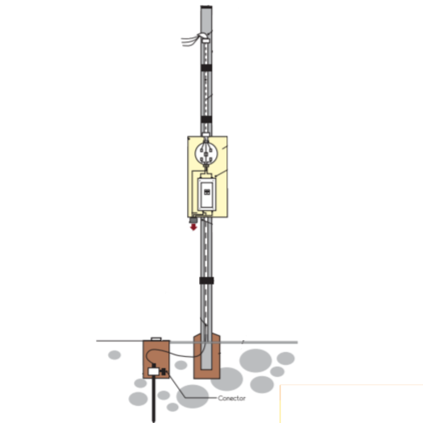

Instalación de medidor en Costa Rica.
Aquí verás la explicacíon sobre el montaje de un medidor electrico con los requrimientos que se necesitan en Costa Rica, esto puede variar según el trabajo a realizar y preferencias del instalador.
| Artículo | Cantidad |
| Tubo redondo galvanizado de 3 pulgadas de 6 metros | 1 unidad |
| Tubo e.m.t 1 1/4 | 2 unidades |
| Tubo e.m.t de 1/2 | 1 unidad |
| Conector e.m.t 11/4 | 6 unidades |
| Conector emt 1/2 | 1 unidad |
| Gaza e.m.t 5 pulgadas | 4 unidades |
| Conduleta e.m.t botagua 11/4 | 2 unidades |
| Conduleta LB 11/4 | 1 unidad |
| Gaza Emt 11/4 de 1 o 2 orejas | 4 unidades |
| Tornillos de techo de 11/2 punta broca unidad | 8 unidades |
| Varilla cooperweld 1/2 de 2.40 metros con Gaza | 1 unidad |
| Cable eléctrico #8 color verde | 2 metros |
| Cable eléctrico #4 color blanco | 8 metros |
| Cable eléctrico #4 color verde | 4 metros |
| Cable eléctrico #4 color rojo | 16 metros |
| Caja concreto cuadrada para varilla cooperweld | 1 unidad |
| 1 saco de cemento piedra y arena (opcional) | 1 unidad |
| Base de medidor con breaker de 100 amperios tipo nema 3r | 1 unidad |

imagen toda de: